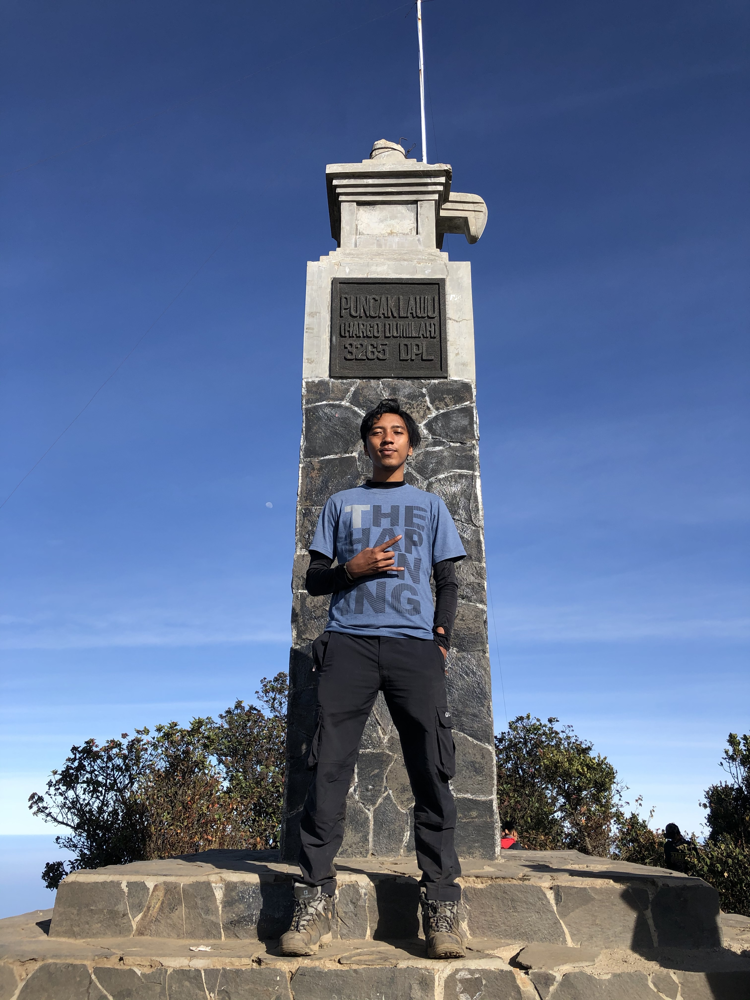
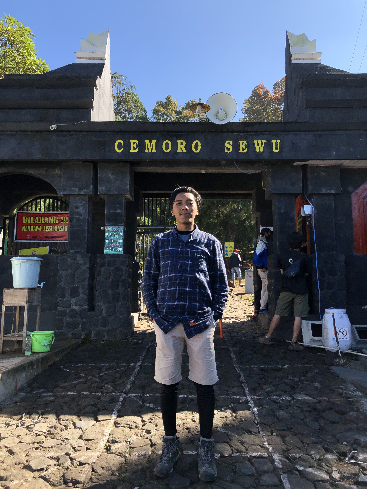

About Me
Halo nama aku Nauval Fauzan Baharuddin Zuhri biasa dipanggil Nopal. Umur ku 19 tahun dan aku kuliah di Institut Teknologi Sepuluh Nopember jurusan Sistem Informasi.
LINK TUGAS
Berikut merupakan beberapa URL terhadap tugas yang sudah saya kerjakan sebelumnya
Trip to Lawu
Magetan, 8 Agustus 2020
Pada tanggal 8 Agustus 2020 saya dan 2 orang teman saya memiliki rencana untuk mendaki Gunung Lawu. Kami melakukan perjalanan ini selama 4 hari 3 malam. Kami berangkat menggunakan kereta dari stasiun jember. Sesampainya di madiun kami menggunakan taxi untuk menuju ke basecamp, sesampainya di base camp kami langsung idtirahat dikarenakan juga sudah larut malam. Lalu dihari kedua kami mulai mendaki dan tidur pada pos 5. Dihari ketiga kami memulai summit pada pukul 05.00 WIB. Sesudah sampai puncak kami langsung turun ke basecamp dan sampai pada pukul 17.00 WIB. Dan istirahat lagi 1 malam di basecamp untuk memulihkan tenaga. Keesokan harinya kami pulang ke Lumajang dengan membawa cerita-cerita menarik.
Trip to Green Bay
Banyuwangi, 2 September 2017

Padaa tanggal 2 September 2017 saya dan 5 orang teman saya melakukan perjalanan ke Banyuwangi dengan menggunakan sepeda motor. Kami menempuh perjalanan selama 12 jam dikarenakan ada beberapa kendala seperti hujan dan tidak tau arah. Sesampainya dilokasi kami tidak diizinkan memasuki kawasan oleh penduduk lokal dikarenakan hari sudah petang dan kawasan wisatanya masih tergolong hutan liar. Jadi kami menginap terlebih dahulu dengan menggunakan tenda di daerah pemukiman. Keesokan harinya kami baru memasuki kawasan wisata pada ukul 06.00 WIB dan menghabiskan waktu dengan bersenda gurau bersama teman-teman. Tak terasa jam sudah menunjukan pukul 13.00 WIB dan kami langsung bergegas pulang dsengan membawa cerita senang maupun susah.